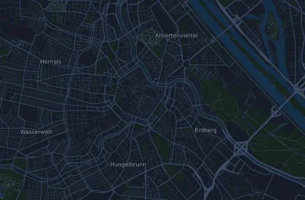

Vienna City Marathon 42,7 km
- Distans
- 42,7 km
- Höjdmeter
- ↑ 98 m
- Högsta punkt
- 203 m ö.h.
- Underlag
- Väg
- Karaktär
- Flack
- Start
- kl. 09:00
Höjdprofil
Förbered dig med Mila
Mila är en löpcoach i appen. Lägger du till ett lopp i din plan planerar coachen veckorna fram till start efter din form, och ger dig en tidsprognos och en plan för tempo, vätska och energi på banan.

Rätt pass. Rätt dag.
Banan

Om banan
Vienna City Marathon är en snabb och nästan platt stadsbana: 42,66 km med bara 98 höjdmeter upp och 87 ned, mellan 158 och 203 m ö.h. Den enda klättringen värd namnet är en lång, knappt märkbar stigning på i snitt 0,2 procent. Den börjar kring km 1 och bär upp till banans högsta punkt, 203 m, ungefär vid km 17. Sedan tappar banan sakta höjd ned mot 158–159 m mellan km 30 och 34, innan de sista kilometrarna stiger lätt igen, cirka 16–19 meter in mot målet.
Banan kräver jämn fart och god uthållighet snarare än backstyrka. Lägg träningen på långpass som växer stegvis, gärna med partier i tänkt maratonfart på troligen asfalt, och på tröskelpass som gör att farten känns lättare. Håll igen i första halvans långa stigning och använd den lätta utförslöpan efter km 17. Öva på att hålla tempot på trötta ben, så att det svaga motlutet mot slutet inte kostar tid. Träna också energi och dryck under långpassen.
Beskrivningen är skriven av Milas coach utifrån banans data.
Klättringar
| Börjar vid | Längd | Höjdmeter | Lutning | Topp (m ö.h.) |
|---|---|---|---|---|
| km 1,0 | 17 km | 39 m | 0,2 % | 203 |
Inför start
Starttider
- kl. 09:00
Källa: vienna-marathon.com, hämtat 15 oktober 2026
Tempotabell
Vienna City Marathon 42,7 km på 3:00:00 – tid per km och mellantider
4:13 per km · km 10: 42:12 · km 21,1: 1:29:02 · km 30: 2:06:35 · km 40: 2:48:47 · mål: 3:00:00
Vienna City Marathon 42,7 km på 3:30:00 – tid per km och mellantider
4:55 per km · km 10: 49:14 · km 21,1: 1:43:52 · km 30: 2:27:41 · km 40: 3:16:54 · mål: 3:30:00
Vienna City Marathon 42,7 km på 4:00:00 – tid per km och mellantider
5:38 per km · km 10: 56:16 · km 21,1: 1:58:42 · km 30: 2:48:47 · km 40: 3:45:02 · mål: 4:00:00
Vienna City Marathon 42,7 km på 4:30:00 – tid per km och mellantider
6:20 per km · km 10: 1:03:17 · km 21,1: 2:13:33 · km 30: 3:09:52 · km 40: 4:13:10 · mål: 4:30:00
Tiderna förutsätter jämnt tempo hela vägen. Det är ren räkning, ingen prognos: i backar, i trängsel och vid vätskekontroller varierar tempot.
Vanliga frågor
När går Vienna City Marathon 42,7 km?
Vienna City Marathon 42,7 km går söndag 18 april 2027. Kontrollera datum och starttid hos arrangören.
Vilken tid startar Vienna City Marathon 42,7 km?
Enligt arrangören: kl. 09:00.
Hur lång är Vienna City Marathon 42,7 km och hur många höjdmeter är det?
Loppet är 42,7 km långt med 98 höjdmeter uppför och 87 nedför. Högsta punkten ligger 203 m ö.h.
Hur ser banan på Vienna City Marathon 42,7 km ut?
Banan räknas som flack, med 2,3 höjdmeter per km i snitt. Den har en klättring på minst 25 höjdmeter, vid km 1,0: 39 höjdmeter på 17 km. Banan går från start till ett mål på en annan plats. Underlaget är väg.
Hur lägger jag upp farten på Vienna City Marathon 42,7 km?
Sikta på en jämn ansträngning hela vägen, och håll igen de första kilometrarna när benen känns pigga och fältet drar iväg. Banan är flack, så ett jämnt tempo per kilometer fungerar bra. I Mila får du en tempoplan för just den här banan efter din egen form.
Fler lopp som det här
Fler lopp i närheten
- Oberbank Linz Donau Marathon (Marathon) 42,2 km11 april 2027 · Linz, Österrike
- Innsbruck Alpine Trailrun Festival – K85 Heart of the Alps Ultra 85,6 km8 maj 2027 · Innsbruck, Österrike
- Salzburg Marathon 42,2 km23 maj 2027 · Salzburg, Österrike
- mozart 100 by UTMB – mozart Ultra (84 km)5 juni 2027 · St. Gilgen, Österrike
- Großglockner Ultra-Trail | GGUT 110 km23 juli 2027 · Kaprun, Österrike
- KAT100 by UTMB – Endurance Trail 75 km6 augusti 2027 · Kitzbühel, Österrike
Förbered dig med Mila
Rätt pass. Rätt dag.
Uppgifterna kommer ur banfilen och arrangörens information. Kontrollera datum, starttider och regler hos arrangören.
Mila är inte kopplad till, sponsrad av eller godkänd av arrangören eller loppets sponsorer. Namn och varumärken tillhör sina ägare. Arrangör eller rättighetsinnehavare? Begär ändring eller borttagning